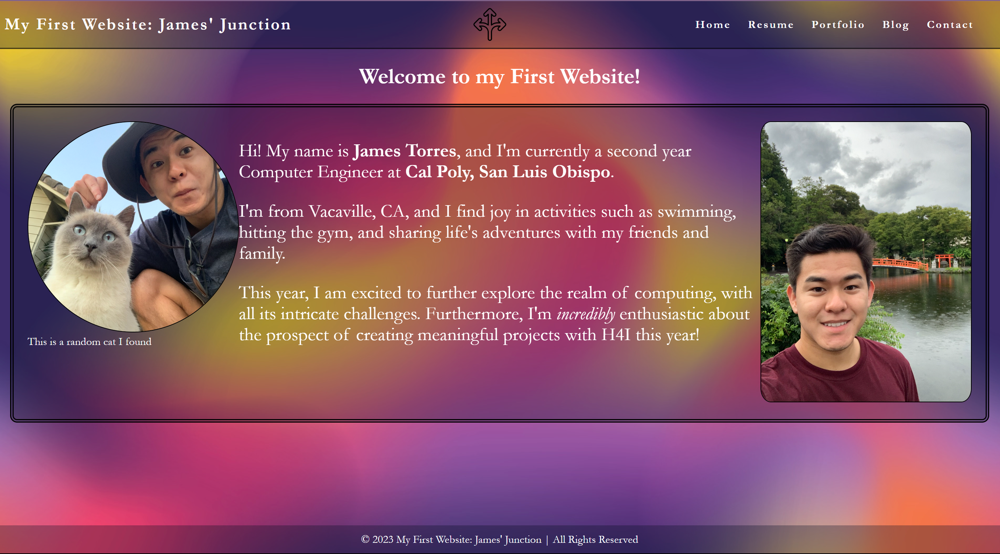
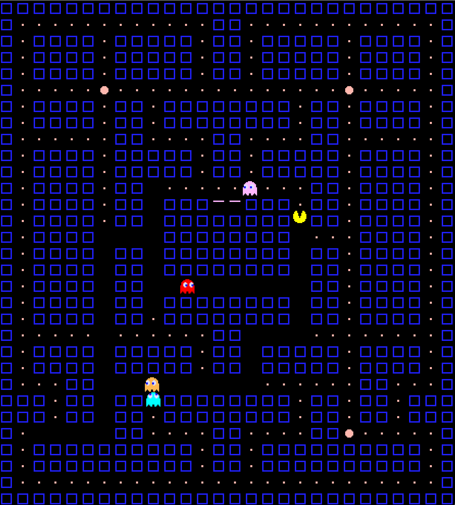
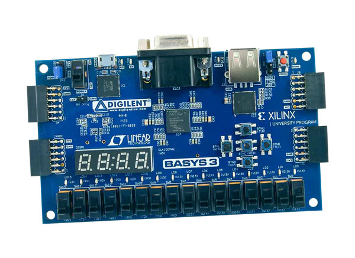

Portfolio



My Personal Website
This personal website was created as part of the Hack4Impact starter pack
Visit HerePacMan Remake
A remake of the 2D game classic, PacMan! Built in Java without any game engines
Visit HereFPGA Digital Kitchen Timer
A versatile kitchen timer with variable input, start, and reset functionality: all packaged as a FPGA using SystemVerilog